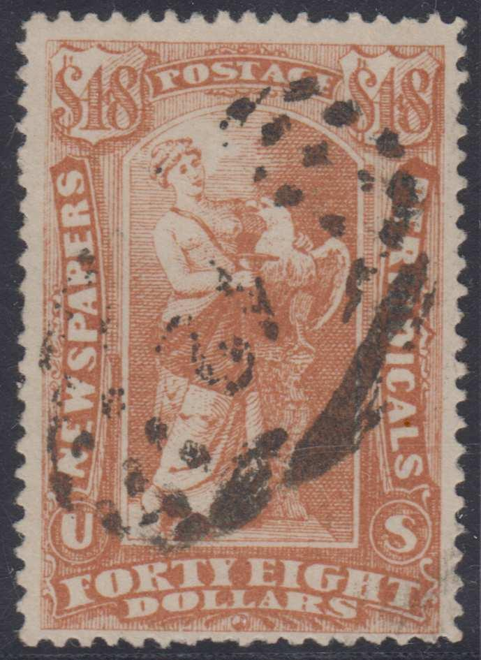
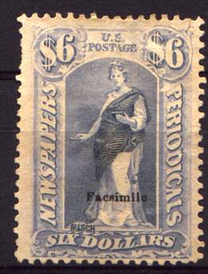
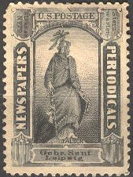
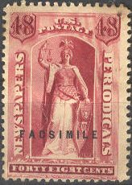
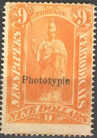
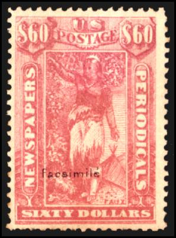

Return To Catalogue - USA Newspaper stamps - United States Overview
Note: on my website many of the
pictures can not be seen! They are of course present in the cd's;
contact me if you want to purchase the catalogue.
Spiro forgeries of these stamps:

$48 forgery with "42" numeral cancel
Other stamps that I do not quite trust:
(Reduced sizes)
Another forgery with overprint 'FALSCH' (=forged in German) and 'Facsimile'.

The Senf brothers of Leipzig, Germany also made forgeries of these stamps. They were distributed with the journal 'Illustriertes Briefmarken Journal'. The word "FALSCH" (=forged in German) is incorporated in the design. Twenty four values (all except 1 c) were imitated and also offered for 4 M per set (source: Schweizer Illustr. Briefmarken-Zeitung May 1885 or http://briefmarken.ag/). It seems that no 1 c was forged, but instead an advertisement label was made:

Other sources (Schweizer Illustr. Briefmarken-Zeitung April 1885 or http://briefmarken.ag/) talk about forgeries with "Facsimile" overprint made by a certain Mr. Dauth (maybe the printer of the Senf forgeries?).
(Zoom-in of the word "FALSCH" on two stamps)
(24 c inscription "FALSCH" in the stars and with blue
overprint "FACSIMILE")
(3 c and 8 c forgeries with inscription "FALSCH" and
"FACSIMILE" at both sides of the head)
Facsimiles:
The Senf forgeries exist with the overprint "Facsimile". The earliest and smallest facsimile overprints have a dimension of 9mm x 1mm, and the largest ones 21mm x 2.5mm. It seems that 7 different kinds of this overprint exist.

(In this forgery the words "FALSCH" have been disguised
with black blotches)
Large "FACSIMILE" overprint in the colour of the stamp:
I have seen the values 1c, 2c, 3c, 8c, 9c, 10c, 12c, 24c, 60c, 192c, $3, $6, $9, $12, $36 and $60 with the above overprint. Probably all values exist.
Sometimes, these overprints were covered by cancels by other forgers. Example of such a forgery:
(The word "FACSIMILE" is coloured in and a fake cancel
is applied)
'Phototypie' forgeries
Another forgery can be attributed to the printer Kohl & Co Lichtdrucke in Frankfurt am Main. They have a overprint "Phototypie" (on the lower black values this is in colour with an additional overprint "Imit".) or a circular overprint "Kohl&Co":

According to the website: http://www.stamp2.com/articles/ascgb/article1.asp, there are also some forgeries made by Isenstein(?) of Germany; some crude copies (2 c to 96 c only). Furthermore, there seem to be some forgeries made by Freidl of France with overprint "Facsimile" (10 mm x 1.55 mm) with the word "FAUX" added in the design (all values).

(Forgeries with "FAUX" in the design at the feet of the
figure, some of them with additional "Facsimile"
overprint)
Forgery with circular overprint with text 'PHOTO-GRAPHIE'.
Some nice websites on forgeries of these newspaper stamps: http://www.stamp2.com/articles/ascgb/article1.asp or http://www.ghg.net/dpepper/ (excellent, highly recommended)
{kind=link}
{kind=link}
{kind=link}
{kind=link}
{kind=link}